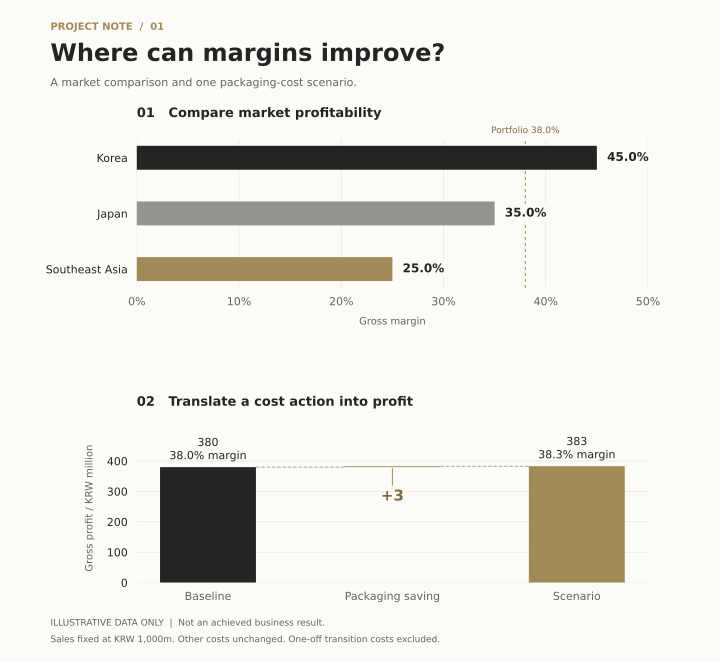

한양대학교 · 서울
2018.02 — 2024.08경제금융학부 졸업
학점 4.42/4.5Summa Cum Laude
관심 있는 문제를 분석한 프로젝트와 학업·활동 경험을 정리합니다.
마감 원가와 매출을 정리하고, 수익성이 낮은 마켓의 개선 과제 하나를 선정하는 분석 예시입니다.
포트폴리오 구성용 샘플입니다. 실제 기업 자료, 수행 이력 또는 달성 성과가 아닙니다.

동일한 한 달, 동일 제품 기준의 가상 자료입니다. 순매출은 할인·반품 차감 후 금액이며, 원가는 제조·포장 원가를 포함한 매출원가로 가정합니다. 모든 마켓은 원화 환산을 완료했다고 가정합니다.
| 마켓 | 순매출 | 예산원가 | 실제원가 | 원가 차이 | 매출총이익률 |
|---|---|---|---|---|---|
| 한국 | 500 | 270 | 275 | +5 | 45.0% |
| 일본 | 300 | 185 | 195 | +10 | 35.0% |
| 동남아 | 200 | 145 | 150 | +5 | 25.0% |
| 전체 | 1,000 | 600 | 620 | +20 | 38.0% |
매출총이익률 = (순매출 − 실제원가) ÷ 순매출 × 100
원가 차이 = 실제원가 − 예산원가. 전체 이익률은 마켓별 비율의 단순 평균이 아닌 합계 금액으로 계산합니다.
마감 체크 항목: 마켓·제품 코드와 대상 월 일치 여부, 중복·누락 자료, 원가 원장과 합계 대사, 예산 대비 차이의 사유를 확인하도록 설계합니다.
동남아의 이익률이 25.0%로 가장 낮습니다. 실제원가 150 중 포장 원가가 20이라고 추가로 가정하고, 포장 사양 표준화를 검토 과제로 선정합니다. 일본은 원가 초과가 가장 크므로 별도 원인 확인 대상으로 둡니다.
절감액은 가정값이며 실현된 성과가 아닙니다. 일회성 전환비용, 품질·규제 요건, 환율 및 판매량 변화는 계산에서 제외했으므로 실행 전 추가 확인이 필요합니다.
위 일정과 부서 협의는 실행 계획 예시이며, 실제 협업 경험을 의미하지 않습니다.
경제금융학부 졸업
학점 4.42/4.5Summa Cum Laude
한양대학교 경제금융학부
Sheffield University
한양대학교